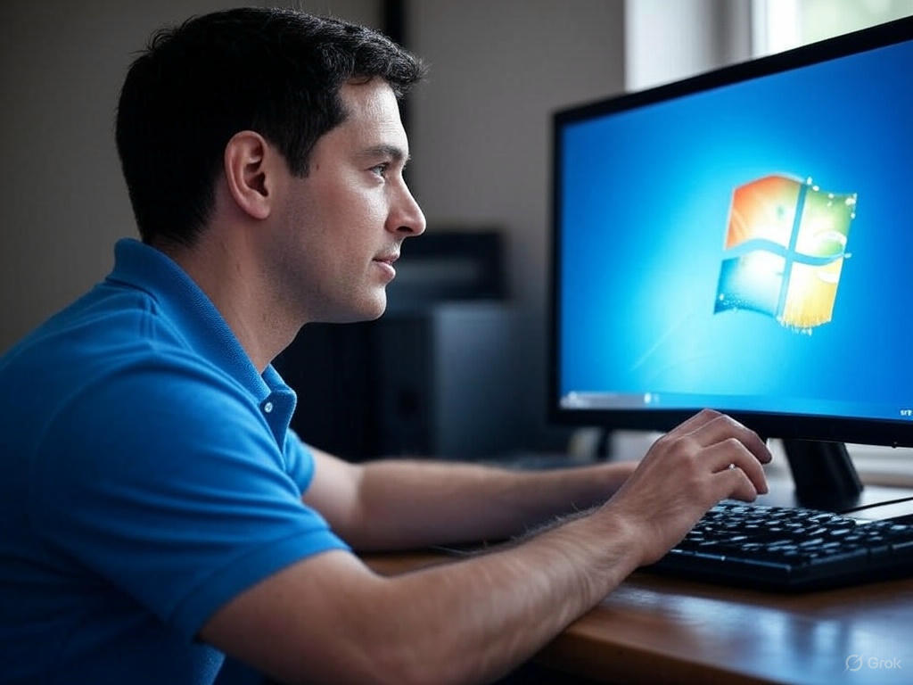

Whatsapp
Whatsapp
Mhd. Akbar Bathnul Wadi Nst • 0702232065 Harits Al Khosyi • 0702233138 Raga Amri • 0702232071
Kami menawarkan layanan profesional dan terpercaya untuk memperbaiki performa komputer kamu. Kami menyediakan instalasi ulang sistem operasi Windows versi terbaru seperti Windows 7, 8, 10, dan 11, baik 32-bit maupun 64-bit, dengan proses cepat dan akurat. Layanan kami mencakup penghapusan virus, perbaikan error sistem, peningkatan kecepatan, serta instalasi driver dan aplikasi pendukung secara lengkap.

Dengan pengalaman yang ahli, kami memastikan komputer kamu kembali optimal dan siap digunakan untuk berbagai kebutuhan kerja, belajar, maupun hiburan. Kami juga menyediakan konsultasi gratis untuk menentukan solusi terbaik sesuai kondisi perangkat kamu. Pilihan layanan kami sangat cocok untuk pengguna rumahan, pelajar, hingga pelaku bisnis yang membutuhkan sistem operasi Windows yang stabil dan aman.
Percayakan kebutuhan install ulang Windows kamu kepada kami untuk hasil yang maksimal dengan harga bersaing dan layanan ramah pelanggan. Hubungi kami sekarang untuk mendapatkan layanan cepat dan terpercaya demi kenyamanan penggunaan komputer kamu.
- Dapat datang langsung ke lokasi konsumen.
- Keamanan data konsumen terjamin.
- Menggunakan software dan driver resmi.
- Konsumen dapat melihat langsung cara install ulang kami.
- Harga transparan dan kompetitif
- Alat-alat kami terhindar dari virus dan malware.